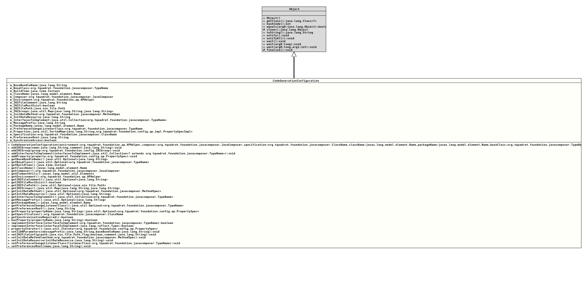

Class CodeGenerationConfiguration
- Author:
- Thomas Thrien (thomas.thrien@tquadrat.org)
- Version:
- $Id: CodeGenerationConfiguration.java 1105 2024-02-28 12:58:46Z tquadrat $
- Since:
- 0.1.0
- UML Diagram
-

UML Diagram for "org.tquadrat.foundation.config.ap.CodeGenerationConfiguration"
{kind=link}
-
Field Summary
FieldsModifier and TypeFieldDescriptionprivate StringThe base bundle name for the resource bundle if i18n support is required.private final TypeNameThe optional base class for the new configuration bean.private final InstantThe build time; this is provided by the configuration as this allows easier testing.private final NameThe class name for the configuration bean class, without the package.private final JavaComposerTheJavaComposerinstance that is used for the code generation.private final APHelperThe processing environment.private StringThe comment for the configuration file.private booleanThe flag that indicates whether the configuration must exist prior to the first open attempt.private StringThe name for the configuration file.TheINIfile groups.private MethodSpecThe method that is provided as a source for the initialisation of the properties of the configuration bean.private StringThe name of the resource that is used to initialise the properties of the configuration bean.private final Collection<TypeName> The interfaces that are extended by the configuration bean specification.private StringThe message prefix for the i18n support.private final NameThe name of the package for the configuration bean.private TypeNameThe change listener class for thePreferences.private StringThe name of the preferences root node.private final SortedMap<String, PropertySpecImpl> The properties for the configuration bean.private final ClassNameThe configuration bean specification.private final booleanThis flag indicates whether the access to the configuration bean properties must be thread-safe. -
Constructor Summary
ConstructorsConstructorDescriptionCodeGenerationConfiguration(APHelper environment, JavaComposer composer, ClassName specification, Name className, Name packageName, TypeName baseClass, boolean synchronizeAccess) Creates an instance ofCodeGenerationConfiguration. -
Method Summary
Modifier and TypeMethodDescriptionfinal voidaddINIGroup(String name, String comment) Adds anINIfile group.final voidaddINIGroup(INIGroup group) Adds anINIfile group.final voidaddInterfacesToImplement(Collection<? extends TypeName> interfacesToImplement) Adds some interfaces that have to be implemented by the new configuration beam.final voidaddProperty(PropertySpec property) Adds a property to the new configuration bean.Returns the name of the field that holds the base bundle name for the resource bundle, in case i18n support is configured.Returns the base class for the new configuration bean.final InstantReturns the build time for the new configuration bean.final NameReturns the name of the class for the new configuration bean.final JavaComposerReturns theJavaComposerinstance that is used for the code generation.final ElementsReturns an implementation of some utility methods for operating on elements.final APHelperReturns the processing environment.Returns the comment for theINIfile.final booleanReturns the flag that indicates whether the configuration file must exist before the program starts.Returns the name for the file that backs theINIFileinstance used by the generated configuration bean.Returns theINIfile groups.final Optional<MethodSpec> Returns the method that is provided as a source for the initialisation of the properties of the configuration bean.Returns the name of the resource that is used to initialise the properties of the configuration bean.final Collection<TypeName> Returns the interfaces that have to be implemented by the new configuration bean.Returns the name of the field that holds the message prefix, in case i18n support is configured.final NameReturns the name of the package for the new configuration bean.Returns the class for thePreferenceschange listener.final StringReturns the name for thePreferencesroot node.final Optional<PropertySpec> getProperty(String propertyName) Returns the property with the given name.final ClassNameReturns the configuration bean specification.final booleanReturns the flag that controls whether the generated code for the access to the configuration bean properties has to be thread-safe.final booleanhasProperty(String propertyName) Checks whether a property with the given name does already exist.final booleanimplementInterface(Type interfaceToImplement) Checks whether the given interface must be implemented by the new configuration bean.final booleanimplementInterface(TypeName interfaceToImplement) Checks whether the given interface must be implemented by the new configuration bean.final Iterator<PropertySpec> Returns anIteratorover the defined properties.final voidsetI18NParameters(String messagePrefix, String baseBundleName) Sets the i18n parameters.final voidsetINIFileConfig(String filename, boolean flag, String comment) Sets the configuration for theINIfile.final voidsetInitDataMethod(MethodSpec method) Set the method that is provided as a source for the initialisation of the properties of the configuration bean.final voidsetInitDataResource(String initDataResource) Set the name of the resource that is used to initialise the properties of the configuration bean.final voidsetPreferenceChangeListenerClass(TypeName listenerClass) Sets the class for thePreferenceschange listener.final voidsetPreferencesRoot(String name) Sets the name for the preferences root node.
-
Field Details
-
m_BaseBundleName
The base bundle name for the resource bundle if i18n support is required.- Note:
-
- This is not the value but the fully qualified field name where to find that value!
-
m_BaseClass
The optional base class for the new configuration bean. -
m_BuildTime
The build time; this is provided by the configuration as this allows easier testing. -
m_ClassName
The class name for the configuration bean class, without the package. -
m_Composer
TheJavaComposerinstance that is used for the code generation. -
m_Environment
The processing environment. -
m_INIFileComment
The comment for the configuration file. -
m_INIFileMustExist
The flag that indicates whether the configuration must exist prior to the first open attempt. -
m_INIFilePath
The name for the configuration file. -
m_INIGroups
TheINIfile groups. The key is the name of the group, the value is the respective comment for the group. -
m_InitDataMethod
The method that is provided as a source for the initialisation of the properties of the configuration bean. -
m_InitDataResource
The name of the resource that is used to initialise the properties of the configuration bean. -
m_InterfacesToImplement
The interfaces that are extended by the configuration bean specification. -
m_MessagePrefix
The message prefix for the i18n support.- Note:
-
- This is not the value but the fully qualified field name where to find that value!
-
m_PackageName
The name of the package for the configuration bean. -
m_PreferenceChangeListenerClass
The change listener class for thePreferences. -
m_Properties
The properties for the configuration bean. The name of the property is the key.
-
m_Specification
The configuration bean specification. -
m_PreferencesRoot
The name of the preferences root node. -
m_SynchronizeAccess
This flag indicates whether the access to the configuration bean properties must be thread-safe.
-
-
Constructor Details
-
CodeGenerationConfiguration
public CodeGenerationConfiguration(APHelper environment, JavaComposer composer, ClassName specification, Name className, Name packageName, TypeName baseClass, boolean synchronizeAccess) Creates an instance ofCodeGenerationConfiguration.- Parameters:
environment- The access to the processing environment.composer- TheJavaComposerinstance that is used for the code generation.specification- The configuration specification, the interface that defines the configuration bean.className- The name for the configuration bean class, without the package name.packageName- The name of the package for the configuration bean class.baseClass- The optional base class for the new configuration bean class.synchronizeAccess-trueif the access to the configuration bean properties should be thread safe,falseif a synchronisation/locking is not required.
-
-
Method Details
-
addINIGroup
Adds anINIfile group.- Parameters:
name- The name for the group.comment- The comment for the group.
-
addINIGroup
Adds anINIfile group.- Parameters:
group- The group definition.
-
addInterfacesToImplement
Adds some interfaces that have to be implemented by the new configuration beam.- Parameters:
interfacesToImplement- The classes for the interfaces to implement.
-
addProperty
Adds a property to the new configuration bean.
If a property with the same name as the new one already exists, a
CodeGenerationErrorwill be thrown.- Parameters:
property- The property- Throws:
CodeGenerationError- There is a duplicate property.
-
getBaseBundleName
Returns the name of the field that holds the base bundle name for the resource bundle, in case i18n support is configured.- Returns:
- An instance of
Optionalholding the fully qualified field name.
-
getBaseClass
Returns the base class for the new configuration bean.- Returns:
- An instance of
Optionalthat holds the base class.
-
getBuildTime
Returns the build time for the new configuration bean.- Returns:
- The build time.
-
getClassName
Returns the name of the class for the new configuration bean.- Returns:
- The class name.
-
getComposer
Returns theJavaComposerinstance that is used for the code generation.- Returns:
- The composer instance.
-
getElementUtils
Returns an implementation of some utility methods for operating on elements.- Returns:
- The element utilities.
-
getEnvironment
Returns the processing environment.- Returns:
- The processing environment.
-
getINIFileComment
Returns the comment for theINIfile.- Returns:
- The comment for the configuration file.
-
getINIFileMustExist
Returns the flag that indicates whether the configuration file must exist before the program starts.- Returns:
trueif the file must exist already,falseif it will be created on startup.- See Also:
-
getINIFilePath
Returns the name for the file that backs theINIFileinstance used by the generated configuration bean.- Returns:
- An instance of
Optionalthat holds the filename.
-
getINIGroups
Returns theINIfile groups.- Returns:
- The group names and the related comments.
-
getInitDataMethod
Returns the method that is provided as a source for the initialisation of the properties of the configuration bean.
It it is
defaultorstatic, the implementation of the method has to be part of the configuration bean specification interface itself, otherwise it has to be implemented in base class.It is an error if there is an
initData()method that is neitherdefaultnorstatic, and no base class is defined with the@ConfigurationBeanSpecificatgionannotation.The signature for the method has to be
public Map<String,Object> initData() throws Exceptionand the return value is a map with the initialisation values, where the property names are the keys.
- Returns:
- An instance of
Optionalthat holds the method. - See Also:
-
getInitDataResource
Returns the name of the resource that is used to initialise the properties of the configuration bean.- Returns:
- An instance of
Optionalthat holds the resource name.
-
getInterfacesToImplement
Returns the interfaces that have to be implemented by the new configuration bean.- Returns:
- The interfaces to implement.
-
getMessagePrefix
Returns the name of the field that holds the message prefix, in case i18n support is configured.- Returns:
- An instance of
Optionalholding the fully qualified field name.
-
getPackageName
Returns the name of the package for the new configuration bean.- Returns:
- The package name.
-
getPreferenceChangeListenerClass
Returns the class for the
Preferenceschange listener. If no listener class is defined, the change listener support for thePreferenceswill be omitted.- Returns:
- An instance of
Optionalthat holds the listener class. - See Also:
-
getPreferencesRoot
Returns the name for thePreferencesroot node.- Returns:
- The name for the
Preferencesroot node. - See Also:
-
getProperty
Returns the property with the given name.- Parameters:
propertyName- The name of the property.- Returns:
- An instance of
Optionalthat holds the retrieved property.
-
getSpecification
Returns the configuration bean specification.- Returns:
- The configuration bean specification.
-
getSynchronizationRequired
Returns the flag that controls whether the generated code for the access to the configuration bean properties has to be thread-safe.- Returns:
trueif synchronisation/locking is required,falseif not.
-
hasProperty
Checks whether a property with the given name does already exist.- Parameters:
propertyName- The name of the property.- Returns:
trueif the property with the given name already exists,falseotherwise.
-
implementInterface
Checks whether the given interface must be implemented by the new configuration bean.- Parameters:
interfaceToImplement- The class for the interface that has to be implemented.- Returns:
trueif the given interface must be implemented,falseotherwise.
-
implementInterface
Checks whether the given interface must be implemented by the new configuration bean.- Parameters:
interfaceToImplement- The class for the interface that has to be implemented.- Returns:
trueif the given interface must be implemented,falseotherwise.
-
propertyIterator
Returns anIteratorover the defined properties.- Returns:
- The iterator.
-
setI18NParameters
Sets the i18n parameters.- Parameters:
messagePrefix- The value for the message prefix.baseBundleName- The name of the base bundle.
-
setINIFileConfig
Sets the configuration for theINIfile.- Parameters:
filename- The path; can benull.flag- The flag that indicates whether the configuration file must exist before the program starts.trueif the file must exist,falseif it will be created on startup.comment- The comment; can benull.
-
setInitDataMethod
Set the method that is provided as a source for the initialisation of the properties of the configuration bean.- Parameters:
method- The method; can benull.
-
setInitDataResource
Set the name of the resource that is used to initialise the properties of the configuration bean.- Parameters:
initDataResource- The resource name; can benull.
-
setPreferenceChangeListenerClass
Sets the class for thePreferenceschange listener.- Parameters:
listenerClass- The listener class; can benull.- See Also:
-
setPreferencesRoot
Sets the name for the preferences root node.- Parameters:
name- The name for the preferences root node.
-